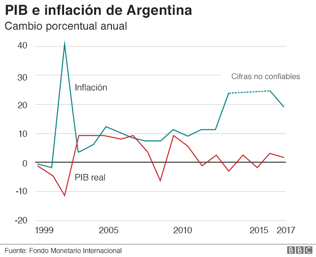

Las grandes barreras económicas, la exigencia de una tarjeta de crédito, la creciente cantidad de plataformas de streaming, las normativas del banco central para las monedas extranjeras y las restricciones de sistemas operativos son los principales motivos que explican el resurgimiento de la piratería digital. Adquirir un software, app gratuita o película recién descargada del cine, está a un click de distancia, las tecnologías avanzan a pasos agigantados en los de esta actividad. En pleno año 2022 el constante desarrollo de nuevas tecnologías y expansión ha llevado al mundo a un proceso de globalización cada vez más acelerado y marcado. Esto ha provocado la aparición de múltiples y novedosos usos de la tecnología, más concretamente el internet.
La red es la manera con la que nos comunicamos hacia el mundo y además, el medio que usamos para consumir el mundo: informativo, educacional, ocioso y artístico. Sin embargo, este consumo no siempre es realizado dentro del marco de la legalidad, más en un país como el nuestro en donde reinan las “leyes de los más vivos” o en donde la frase “El que no llora no mama y el que no afana es un gil” (“Cambalache”, tango de Julio Sosa , 1935), podrían sintetizar la cultura y el respeto a las normas de los argentinos a la perfección. Sin dejar de mencionar las dificultades económicas que limitan los comportamientos de consumo cada vez más, obligando al consumidor nacional a caer en actos ilegales para adquirir software.
El uso fraudulento, además de suponer una violación de los legítimos derechos de las compañías que crean estos programas informáticos, también implica graves riesgos para las personas que los utilizan o las empresas infractoras. No obstante, el uso privado y comercial adquirido de manera non sancta muestra aumentos que no se condicen con los riesgos que conllevan.
Esta monografía denominada “Piratería Informática: Inmoralidad legal o ética”, responde a la urgente necesidad de abordar un tópico en auge debido a una crisis económica interminable, vacíos legales y rápida extensión de las nuevas tecnologías, y que, en un principio, constituyen un gran atentado a las leyes de derecho de autor, a las economías del conocimiento informático y a los desarrolladores de software legales. pág. 2
La piratería digital es un tópico del cual poco se habla en nuestro país, aunque la gran mayoría del consumo que realizamos es de manera ilegal. Es por ello que resulta interesante abordar la temática y reflexionar su validez moral y ética. En los siguientes capítulos abordaremos la historia de la piratería desde su principio a la actualidad, realizaremos una hipótesis sobre la problemática, abordaremos el marco teórico y el marco social, las distintas percepciones positivas o negativas; y para finalizar concluimos esta monografía con la conclusión grupal e individual de cada uno de los integrantes del equipo.
- La piratería se utiliza para poder tener acceso a contenidos digitales de forma fácil y gratuita.
- Esta práctica ha aumentado debido a las constantes crisis económicas.
- Los altos precios de los softwares obligan a los consumidores a buscar alternativas económicas.
- Si los costos de los contenidos en red fueran más accesibles, los usuarios no deberían tener que buscar otras opciones de descarga.
- Existe un uso desmedido de internet sin tener en cuenta o ser consciente de las consecuencias legales y económicas.
- No se reduce el uso de la piratería como consecuencia de las leyes y la permisividad de las autoridades
- La cultura argentina es más propensa a fomentar actos de piratería.
- La aparición de nuevas plataformas de streaming disminuye el uso de la piratería
Concretamente los puntos a analizar seran:
- I. Marco Histórico: tener en cuenta el contexto histórico de un suceso pasado es importante, pues permite emitir un juicio menos limitado y, aunque no posea veracidad total, al menos no deforme, minimice los hechos o maximice su valor en el tiempo .
- II. Marco Teórico: en segundo lugar se realizará una revisión teórica de los conceptos a utilizar respecto a los contenidos digitales “piratas”, es decir, consumidos o descargados en la red de manera ilegal.
- III. Marco Económico y Social: buscando contextualizar las razones de la expansión de esta práctica con las nuevas tecnologías, factores sociales y económicos que han potenciado la pirateria.
- IV. Marco Legal: en el cual abordaremos el conjunto de leyes, normas y reglamentos que le dan fundamento a la investigación.
- V. Aspectos positivos y negativos del uso de la pirateria: otro punto importante a indagar son todos los puntos de vista de la práctica, dejando de lado cualquier subjetividad y percepción personal.
- VI. Opinión autorizada o letrada: entendemos además que es muy relevante exponer los criterios de autores con mayor relevancia o conocimiento en la materia.
El comienzo de una gran historia
La piratería informática o hacking tiene una historia paralela al desarrollo e introducción de la informática y de las redes de comunicaciones. La Historia de la Piratería Informática tiene comienzo en el año 1960. En esa época no existía la Computadora Personal o PC, por lo cual los piratas eran saboteadores de redes telefónicas, estos se hacían llamar Phreakers o Phone Freaks Éstos tenían como fin poder hacer llamadas telefónicas de extensa distancia sin tener que pagar.Una compañía de servicios telefónicos de Estados Unidos “Bell Telephone” percibe el primer caso de sabotaje hacia su red telefónica por una llamada de larga distancia. Uno de sus empleados informa de unas excesivas llamadas a un número de información de otra zona. Este caso hizo que la compañía hiciera una investigación y llegaron a la conclusión de que el dispositivo que hacía las llamadas utilizaba una caja metálica llamada “Blue Box” que hacía tonos de sonidos para redirigir las llamadas, tonos que la compañía utilizaba en esa época como un método de seguridad.
El funcionamiento de la Blue Box se basaba en un “Sistema de señalización” que era la base de seguridad de la compañía Bell Telephone, la cual mediante una señalización de multifrecuencia que manejaba 6 tonos para redirigir las llamadas cuando se marcaba un número.
¿Como Los Phreakers sabían de esta vulnerabilidad?
El primero en saber esta vulnerabilidad fue Joe Engressia un niño ciego que a los 8 años silbo por el auricular de su teléfono cuando escuchaba un mensaje pregrabado y la llamada se cortó.Otro Phreaker que empleaba el procedimiento de Engressia, ha sido John Draper, más reconocido por Capitán Crunch, que con un silbato que regalaba la marca de cereales Capitán Crunch, podría utilizarse como herramienta para hacer Phreaking.
También unos de los partícipes de este movimiento de los Phreakers, eran los fundadores de la compañía de Apple Computer conocidos como Steve Jobs y Steve Wozniak, estos se dedicaron por un tiempo a fabricar cajas azules en su famoso garaje. Para la época hacer estas cajas era algo legal en el estado de California, el delito estaba en usarlas.
El Primer Pirata Informático de Internet
La computadora personal conocida por sus siglas en inglés como PC, este dispositivo aparece en los años 80 permitiendo que el público en general tuviera un acceso al mundo informático, por lo que hubo un gran aumento de piratería. En el año 1987 se empezaron a desarrollar “Gusanos Informáticos” el primer creador de este software maligno fue Robert Tappan Morris. Este malware afectó a miles de computadoras personales que estaban conectadas a Internet.Morris fue acusado en 1989 por violación del código 18 de los estados unidos la Ley de Fraude y Abuso informático siendo la primera persona en recibir estos cargos. Para defensa de sus actos antes los jueves, Robert Morris declara en su defensa “demostrando las deficiencias de las medidas de seguridad actuales en las redes informáticas mediante la exportación de los defectos de seguridad que él había descubierto”. Gracias a este suceso da comienzo a una nueva era de la Piratería Informática.
Una nueva era
El auge del internet en la década de los 90 da la posibilidad de acceder a grandes cantidades de información, existiendo blogs donde los usuarios publican estos datos relevantes. En este blog de información muchos hackers compartían herramientas que podían analizar dentro de la red de internet vulnerabilidades para colgarse de estas e intentar manipular las computadoras donde accedían logrando insertar virus informáticos. En esa época hubo un gusano informático como los que desarrolla Morris, llamado el gusano de Melissa que se estima que afectó al 20% de los usuarios que estaban conectados a internet. Piratas de la vieja era Empresarios de la actualidad. Mucho antes de Spotify, Apple Music y otros servicios de streaming en un chat de IRC, Shawn Fanning, Sean Parker y Ali Aydartres fantaseaban con crear una comunidad online que les permitiera compartir archivos. En junio de 1999 Fanning subió a internet la primera versión de Napster, una red P2P para compartir archivos. En los 90’s internet era lento, pero el uso de la compresión MP3 convirtió pasarse música a través de este protocolo en un proceso un poco menos pesado; habían conseguido simplificar tanto el intercambio de música que llegaron a alcanzar los 80 millones de usuarios. Esto generó una fuga de capitales en las disqueras debido a que ellos no cobraban por usar su sitio solo había anuncios en él; su primer encontronazo por infringir el copyright fue en julio del año 2000 contra Metallica que los demandó por diez millones de dólares cuando encontraron en su red la canción “I disappear” lanzada en mayo de ese mismo año, a esta demanda se sumaron Dr Dree y el sello A&M records. Napster se alió con el sello alemán Edel Music para distribuir música legalmente y para evitar una oleada de demandas fue a pedir a las artistas listas de material protegido, que bloqueaba con filtros, también intentaron avanzar hacia un modelo de suscripción que luego estandarizaron Netflix y Spotify. Pero nada los salvó; tras perder 26 millones de dólares como compensación a la industria, Napster fue a la quiebra en julio de 2001. A pesar del batacazo económico y judicial, la marca Napster fue adquirida por Roxio, que la transformó en una tienda musical online y en 2008 fue vendida a Best Buy por un total de 121 millones de dólares. Shawn Faning se involucró en proyectos como Snocap (donde también estaba Ali Aydar), Ruptura o Path y Sean Parker, hoy en día es uno de los principales accionistas de Spotify y el primer accionista de Facebook.Anonymous
En el año 2003 surge un grupo de hackers desde el foro ,4chan, que más tarde se conocería como Anonymous. Este grupo fue creado por diversión. Anonymous hoy es conocido como un grupo de hackers con ideas activistas o con el término apropiado hacktivismo, haciendo idea a la libertad de expresión y la independencia de internet, estos realizan determinadas acciones en la red logrando piratear información confidencial de empresas privadas y gobiernos.Normalmente, el término piratería es utilizado para hacer referencia a la copia ilegal de productos protegidos con derecho de autor. Los piratas informáticos suelen tener un vasto conocimiento técnico y una serie de habilidades que utilizan para infiltrarse en sistemas vulnerados y/o modificarlos. Cuando hablamos de software crackeado nos referimos a un software propietario cuya licencia ha sido salteada a través de una técnica que vulnera el software, Aunque funcionalmente es lo mismo que el hackeo, el crackeo se usa estrictamente en un sentido delictivo.
Malware o “software malicioso” es un término amplio que describe cualquier programa o código malicioso que es dañino para los sistemas. Un ransomware o gusano informático es un tipo de malware que tiene el fin de propagarse dentro de una computadora y sin oportunidad de ser eliminado con el objetivo de robar información personal del usuario.
Un spyware es un tipo de malware que intenta mantenerse oculto mientras registra información en secreto y sigue sus actividades en línea, tanto en equipos como en dispositivos móviles. Puede supervisar y copiar todo lo que escribe, carga, descarga y almacena.
P2P es una abreviatura para la frase en inglés “peer to peer” esto hace alusión a un sistema de transferencias entre usuarios sin intermediarios. En segundo lugar, se pretende revisar las aportaciones teóricas más recientes sobre la situación de la piratería y en que afecta a la empresa y el usuario común argentino. Sin ir más lejos tres días antes del comienzo de la cuarentena decretada por el presidente Alberto Fernández se registraban en Argentina 508.000 descargas diarias a través de protocolos BitTorrent y que una semana después las descargas habían escalado hasta las 706.000. y si bien, no entramos en el top 10 de países con más descargas ilegales, si estamos entre los países latinoamericanos. (ver si ponemos el gráfico acá o en el anexo) La descarga ilegal de contenidos audiovisuales en Argentina mostró un marcado incremento de casi el 40% desde el inicio del aislamiento social preventivo por la pandemia de coronavirus.
La cifra surge de un informe publicado en los últimos días por el sitio especializado Torrent Freak, que da cuenta de una correspondencia entre los números de Argentina con el de muchos otros países que atraviesan la misma situación sanitaria
Podemos ver cómo ha variado el producto bruto interno, para dar fe de que vivimos en un ciclo sin fin de crisis económicas que afectan al bolsillo, y por ende, a la distribución de gastos de los consumidores (véase Anexo 1).
Estas constantes crisis limitan el consumo de software legal y del uso de plataformas, a menos del 5% de los ingresos anuales de los argentinos , menos del 70 % de los softwares que se instalados son adquiridos de manera legal ,según un estudio hecho de patrones de consumo electrónico por la Business Software Alliance en 2013, número perfectamente razonable , entendiendo que primero se encuentra la satisfacción de necesidades básicas, como alimento, vestimenta, luego se busca satisfacer la necesidad de vivienda y finalmente las actividades ociosas.
Según los últimos datos publicados por Irdeto y YouGov, a través de Statista, Colombia, México, Ucrania, Indonesia y Argentina son las cinco naciones que lideran este mercado ilegal en el campo de contenidos audiovisuales y cinematográficos, de acuerdo a la mayor proporción de personas que reconoce haber utilizado este contenido en el mundo en distintos soportes tecnológicos. Según releva el analista Pablo Petovel de Merca2.0, un sitio especializado en marketing, los datos corresponden al mes de febrero de 2017. Y se obtuvieron a partir de una encuesta realizada entre el 29 de diciembre de 2016 y el 16 de febrero de 2017 en 30 países de todo el planeta, habiendo consultado a 25.738 personas mayores de 18 años.
Desde el punto de vista social podríamos definir a la sociedad argentina como la cuna y el auge de la “viveza criolla”, mezclado con él “lo atamos con alambre” como reza la canción del cantautor Ignacio Copani. Pero, ¿cómo afectan estas frases populares al consumo de software de manera legal?
Son abundantes los ejemplos que reflejan esa tendencia a ser ventajero, ladino, astuto y desconfiado a la vez, por parte de nuestra población que marcan fuego nuestra idiosincrasia y alientan nuestro culto al quebranto de normas, desafiando al poder y a la autoridad, sea cual sea.
Y cuando decimos quebrantar la ley; el derecho de autor no queda de lado, la búsqueda constante de ser “más vivos”,” del facilismo”, de ganarle al sistema, si es que algo así existe, afecta en la manera que consumismo softwares, que compramos Cds completos ilegales, descargamos series o actualizaciones de Windows.
Sin ir más lejos tres días antes del comienzo de la cuarentena decretada por el presidente Alberto Fernández se registraban en Argentina 508.000 descargas diarias a través de protocolos BitTorrent y que una semana después las descargas habían escalado hasta las 706.000. y si bien, no entramos en el top 10 de países con más descargas ilegales (véase anexo 2), si estamos entre los países latinoamericanos.
A pesar de tener una de las leyes de propiedad intelectual más restrictivas del mundo, la piratería sigue en auge. Este factor puede explicarse porque la ley carece de flexibilidad para la cultura y la educación. Por ejemplo, actividades como copiar una canción de un CD a un MP3 son un delito penal, es decir, que puede ser castigado hasta con seis años de prisión. Misma pena que la de vender contenido ilegal en internet, dichas sanciones no tienen comparación ni sentido.
“Estas restricciones no han logrado cumplir con su fin social, de proteger los derechos de autor, sino que han llevado a que la ley sea constantemente infringida en la mayoría de los ámbitos de la vida social. El uso del software sin licencia es un problema de gobierno de las organizaciones, y este estudio muestra que existe una clara necesidad de mejorar”, comenta la presidenta y directora ejecutiva de BSA, Victoria Espinel. Frecuentemente, los hackers distribuyen o venden software "crackeado". El creador no recibe ninguna suma de dinero por su software distribuido de esta manera, violando los derechos de autor del creador.
Pero, ¿qué es el copyright?
El copyright es la forma de atribuir la autoría a alguien que ha creado una obra, además de proporcionarle una serie de derechos como autor. Supone una forma de proteger esta obra para que pueda gestionar los derechos de su contenido su propio creador.Pero ¿existe alguna pena para aquel que infringe la ley? Según el código civil y comercial la respuesta a esta incógnita es positiva, los infractores pueden llegar a tener que abonar multas de hasta $100000 AR y cumplir 6 años de prisión efectiva.
Pero como bien sabemos del dicho al hecho, hay un trecho muy largo. Los casos en donde se haya multado o encarcelado a alguien por la infracción de esta ley son contadas con los dedos de las manos Podemos nombrar los casos de las bajas de páginas como Cuevana , Roja Directa o Taringa como los más famosos.(ver anexo 3)
En el caso de Cuevana se estima que el 98% de su material está protegido por derechos de autor motivo por el cual la Nacional de Apelaciones en lo Criminal y Correccional ordenó el bloqueo de la página y una multa de $1000 , por cada día que la pagina había estado en funcionamiento. Al día de hoy, Cuevana sigue en funcionamiento, pero con un dominio distinto.
Dicho caso sirve para reflejar que las leyes están, pero no existe cumplimiento efectivo de las mismas, y esto, es sabido por toda la sociedad. Por ende, si no existe pena efectiva por el delito, ¿el delito realmente existe?
Aspectos Positivos:
-
Mejora el nivel de los producto digitales:
Al existir un mercado paralelo, las empresas deben justificar, con mejoras evidentes, el precio a pagar por el software o la adquisición de un nuevo juego de video . Esto ha llevado a nuevos niveles de excelencia, con nuevos paquetes freemium para los consumidores, con la opción de utilizar el software con publicidades, que pagan el costo del producto ó con la opción de comprar el producto sin necesidad de que veamos ni un segundo de publicidad. Esto es principalmente para hacer frente a las descargas ilegales pág. 11 sin dejar de generar ganancias tanto para el que desarrolla como para el que utiliza el producto -
Acceso a herramientas privadas de manera gratuita
Existen un sinnúmero de herramientas digitales, que son de acceso privativo, Si no se posee una tarjeta de crédito internacional y plata en dicha cuenta, es imposible si quiera probarlas. Es por ello que los piratas digitales que crackean y comparten estos programas vendrían a ser los, salvando las distancias, robin hood del siglo XXI. Acortando las brechas de la información entre aquellos que son privilegiados económica y culturalmente con aquellos que tienen dificultades para acceder a estos beneficios. -
El acceso a la cultura está globalizado
De manera similar al punto anterior, podemos afirmar que la piratería favorece a la globalización tecnológica, educacional y también a la globalización cultural. Hoy en día podemos acceder al último estreno de las series más populares de Estados Unidos, el mismo día que cualquier habitante de Texas o podemos escuchar el último hit de la banda BTS de manera inmediata. -
Fideliza a un mayor número de clientes
Otro de los beneficios de esta práctica es la fidelización de clientela para las organizaciones lucrativas. Bien es conocido que muchas personas prefieren probar un programa antes de adquirir el paquete pago o mirar un capítulo de la serie antes de pagar la mensualidad completa que sale suscribirse a Netflix, es por ello, que pueden utilizar este medio para corroborar la calidad siempre y cuando luego de testearlas procedan a adquirirlas de forma legal -
Hacking de sombrero blanco o pentesting
Aunque infiltrarse en sistemas para vulnerarlos pueda parecer una práctica al completo desagradable tiene una función más que práctica y esta es la de la ciberseguridad puesto que la gran parte de los hackers que se infiltran a estos sistemas no tienen intenciones maliciosas sino más bien buscan medir sus habilidades y descubrir vulnerabilidades en el proceso para posteriormente informar a los dueños de los sistemas a esta práctica se la denomina pentesting y varias empresas de ciberseguridad en el mundo prestan sus servicios principalmente enfocados en esto mismo infiltrar sistemas para exponer sus vulnerabilidades y así volverlos más seguros.
Aspectos Negativos:
-
Atenta contra la industria del software, audiovisuales y del arte
Si bien sigue siendo una industria muy prolifera y con más inversores en el mundo, todo peso que no se pone para fomentarla, es una piedra más en el camino. Y que disminuya su cantidad de oferentes afecta directamente a los usuarios, porque, siguiendo las reglas básicas de economía a menor oferta e igual número de demandantes el producto, obligatoriamente puede seguir dos caminos. El de la escasez hasta perecer o el camino de la subida abrupta de precios -
Deja vulnerable nuestro equipo a ataques informáticos
Acceder a sitios piratas para realizar esta práctica es un claro riesgo para la seguridad de los usuarios. Uno de los principales riesgos es la presencia de contenido poco adecuado para menores de edad, o el hecho de que se pueden infectar con malware todos los equipos que estén en contacto con páginas no verificadas -
Riesgo de recibir duras sanciones y hasta la pena de prisión
Debido a lo que representa la piratería, en estos últimos años se han endurecido las multas y penas a todas las personas que infrinjan las normativas de los derechos de autor. -
Riesgo de censura
Existe una gran cantidad de casos como el de Taringa o el más conocido a un a nivel mundial caso de Megaupload que fueron castigados de manera excesiva a pesar de no ser legalmente responsables. La censura es una de las posibles penas a la utilización de la piratería. -
Invasión a la privacidad
Existen varios spywares que se dedican a tomar activamente información de usuarios desprevenidos a nivel masivo como el caso Pegasus, esta información luego es utilizada para su comercialización a grandes bases de datos estatales y/o privadas sin consentimiento ni compensación de parte del usuario.
Evaluando la historia y el avance de la piratería en el paso del tiempo, sería cierto si dijeron que en principio fue una práctica poco nociva, pero lentamente empezó a ser más intrusiva y con una mayor implicancia para los derechos de autor y los intereses de las empresas. Varios hackers y piratas informáticos actúan de buena fe y sin perseguir el lucro, pero la naturaleza de la actividad es otra. La piratería, en su mayoría, busca evadir la propiedad intelectual, compartir software, películas, series de terceros, invadir la privacidad y sacarle provecho a esto. Es muy importante que no perdamos el foco de esto. Si es verdad que existen casos en los cuales se utiliza la piratería para demostrar falencias informáticas y luego mejorar, no representa.
Otro de los aspectos evaluados es el económico y social, y pudimos observar que la piratería está muy normalizada y justificada. Y si bien, no es el fin de esta monografía defender los intereses de empresa privadas, creemos que justificar el de robar propiedad intelectual por el hecho de que existen crisis económicas sería muy infantil.
Todo aquello que se realiza con capitales privados y con esfuerzo intelectual es de la propiedad de quién lo produce y puede hacer con esto lo que desee. La mayoría de la gente que piratea no piensa en las consecuencias, no son conscientes de estar cometiendo un delito, o sí lo son, pero no les importa y podríamos ejemplificar con la transacción más sencilla de mercado, y sería absolutamente injusto en donde si a un vendedor de manzanas se le roba día a día la mitad de su producción, justificando que los precios son muy altos, rápidamente podríamos observar la inmoralidad de dicho acto sin ser vendedores de manzanas.
Las leyes tampoco ayudan mucho a disminuir esta práctica, y no porque no existan, hay legislación y jurisprudencia de castigos severos, pero está aplicada de manera desigual. Las penas para quien descarga un mp3 o para quien vende información obtenida de terceros es la misma, y esto no hace más que marginalizar injustamente al primero y disminuir el accionar del segundo. Y no lo decimos porque estemos justificando a la primera persona y a la segunda no, pero las penas no pueden ser las mismas. Al poner en el mismo nivel las dos acciones, esta aplicación ineficiente de la ley, le hace un daño a la protección de propiedad intelectual.
Para concluir, podemos entender porque se ha llegado a este punto en la sociedad en la que la portería sigue en crecimiento. Los elevados precios internacionales, las crisis económicas, sociedades que son más propensas a lo ilegal, la búsqueda de educación gratuita, una creciente propuesta de streaming, pero entendemos que la piratería es un acto inmoral e ilegal.
Piratear es robar el trabajo ajeno y utilizarlo para el goce propio, y no hay justificativo que alcance para apropiarnos de algo que no nos pertenece, ni venderlo ni usarlo para el ocio o la educación.
Anexo 1
PIB de la inflación argentina respecto
Anexo 2
Ley de propiedad intelectual 11.173
El Senado y Cámara de Diputados de la Nación Argentina, Reunidos en Congreso, etc., sancionan con fuerza de Ley:-
Artículo 1
A los efectos de la presente Ley, las obras científicas, literarias y artísticas comprenden los escritos de toda naturaleza y extensión, entre ellos los programas de computación fuente y objeto; las compilaciones de datos o de otros materiales; las obras dramáticas, composiciones musicales, dramático-musicales; las cinematográficas, coreográficas y pág. 15 pantomímicas; las obras de dibujo, pintura, escultura, arquitectura; modelos y obras de arte o ciencia aplicadas al comercio o a la industria; los impresos, planos y mapas; los plásticos, fotografías, grabados y fonogramas, en fin, toda producción científica, literaria, artística o didáctica sea cual fuere el procedimiento de reproducción. La protección del derecho de autor abarcará la expresión de ideas, procedimientos, métodos de operación y conceptos matemáticos pero no esas ideas, procedimientos, métodos y conceptos en sí. (Artículo sustituido por art. 1° de la Ley N° 25.036 B.O. 11/11/1998) -
Artículo 2
El derecho de propiedad de una obra científica, literaria o artística, comprende para su autor la facultad de disponer de ella, de publicarla, de ejecutarla, de representarla, y exponerla en público, de enajenarla, de traducirla, de adaptarla o de autorizar su traducción y de reproducirla en cualquier forma. (Nota Infoleg: Por arts. 1° y 2° del Decreto N° 8.478/1965 B.O. 8/10/1965 se obliga a exhibir la autorización escrita de los autores en la ejecución de música nacional o extranjera en público.) -
Artículo 3
Al editor de una obra anónima o seudónima corresponderán con relación a ella los derechos y las obligaciones del autor, quien podrá recabarlos para sí justificando su personalidad. Los autores que empleen seudónimos podrán registrarlos adquiriendo la propiedad de los mismos. -
Artículo 4
Son titulares del derecho de propiedad intelectual: a) El autor de la obra; b) Sus herederos o derechohabientes; c) Los que con permiso del autor la traducen, refunden, adaptan, modifican o transportan sobre la nueva obra intelectual resultante. d) Las personas físicas o jurídicas cuyos dependientes contratados para elaborar un programa de computación hubiesen producido un programa de computación en el desempeño de sus funciones laborales, salvo estipulación en contrario. (Inciso d) incorporado por art. 2° de la Ley N° 25.036 B.O.11/11/1998) -
Artículo 5
La propiedad intelectual sobre sus obras corresponde a los autores durante su vida y a sus herederos o derechohabientes hasta setenta años contados a partir del 1 de Enero del año siguiente al de la muerte del autor. pág. 16 En los casos de obras en colaboración, este término comenzará a contarse desde el 1 de enero del año siguiente al de la muerte del último colaborador. Para las obras póstumas, el término de setenta años empezará a correr a partir del 1 de enero del año siguiente al de la muerte del autor. En caso de que un autor falleciere sin dejar herederos, y se declarase vacante su herencia, los derechos que a aquél correspondiesen sobre sus obras pasarán al Estado por todo el término de Ley, sin perjuicio de los derechos de terceros. (Artículo sustituido por art. 1° de la Ley N° 24.870 B.O. 16/9/1997) -
Artículo 5 bis
La propiedad intelectual sobre sus interpretaciones o ejecuciones fijadas en fonogramas corresponde a los artistas intérpretes por el plazo de SETENTA (70) años contados a partir del 1º de enero del año siguiente al de su publicación. Asimismo, la propiedad intelectual sobre los fonogramas corresponde a los productores de los fonogramas o sus derechohabientes por el plazo de SETENTA (70) años contados a partir del 1º de enero del año siguiente al de su publicación. Los fonogramas e interpretaciones que se encontraren en el dominio público sin que hubieran transcurrido los plazos de protección previstos en esta ley, volverán automáticamente al dominio privado por el plazo que reste, y los terceros deberán cesar cualquier forma de utilización que hubieran realizado durante el lapso en que estuvieron en el dominio público. (Artículo incorporado por art. 1° de la Ley N° 26.570 B.O. 14/12/2009) -
Artículo 6
Los herederos o derechohabientes no podrán oponerse a que terceros reediten las obras del causante cuando dejen transcurrir más de diez años sin disponer su publicación. Tampoco podrán oponerse los herederos o derechohabientes a que terceros traduzcan las obras del causante después de diez años de su fallecimiento. En estos casos, si entre el tercero editor y los herederos o derechohabientes no hubiera acuerdo sobre las condiciones de impresión o la retribución pecuniaria, ambas serán fijadas por árbitros. -
Artículo 7
Se consideran obras póstumas, además de las no publicadas en vida del autor, las que lo hubieran sido durante ésta, si el mismo autor a su fallecimiento las deja refundidas, adicionadas, anotadas o corregidas de una manera tal que merezcan reputarse como obras nuevas. -
Artículo 8
La propiedad intelectual de las obras anónimas pertenecientes a instituciones, corporaciones o personas jurídicas, durará cincuenta años contados desde su publicación. (Artículo sustituido por art. 1° del Decreto Ley N° 12.063/1957 B.O. 11/10/57.) -
Artículo 9
Nadie tiene derecho a publicar, sin permiso de los autores o de sus derechohabientes, una producción científica, literaria, artística o musical que se haya anotado o copiado durante su lectura, ejecución o exposición públicas o privadas. Quien haya recibido de los autores o de sus derecho-habientes de un programa de computación una licencia para usarlo, podrá reproducir una única copia de salvaguardia de los ejemplares originales del mismo. (Párrafo incorporado por art. 3° de la Ley N° 25.036 B.O. 11/11/1998). Dicha copia deberá estar debidamente identificada, con indicación del licenciado que realizó la copia y la fecha de la misma. La copia de salvaguardia no podrá ser utilizada para otra finalidad que la de reemplazar el ejemplar original del programa de computación licenciado si ese original se pierde o deviene inútil para su utilización. (Párrafo incorporado por art. 3° de la Ley N° 25.036 B.O. 11/11/1998). -
Artículo 10
Cualquiera puede publicar con fines didácticos o científicos, comentarios, críticas o notas referentes a las obras intelectuales, incluyendo hasta mil palabras de obras literarias o científicas u ocho compases en las musicales y en todos los casos sólo las partes del texto indispensables a ese efecto. Quedan comprendidas en esta disposición las obras docentes, de enseñanza, colecciones, antologías y otras semejantes. Cuando las inclusiones de obras ajenas sean la parte principal de la nueva obra, podrán los tribunales fijar equitativamente en juicio sumario la cantidad proporcional que les corresponde a los titulares de los derechos de las obras incluidas. -
Artículo 11
Cuando las partes o los tomos de una misma obra hayan sido publicados por separado en años distintos, los plazos establecidos por la presente Ley corren para cada tomo o cada parte, desde el año de la publicación. Tratándose de obras publicadas parcial o periódicamente por pág. 18 entregas o folletines, los plazos establecidos en la presente Ley corren a partir de la fecha de la última entrega de la obra. -
Artículo 12
La propiedad intelectual se regirá por las disposiciones del derecho común, bajo las condiciones y limitaciones establecidas en la presente Ley.